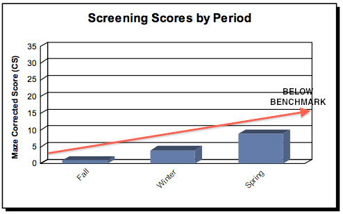
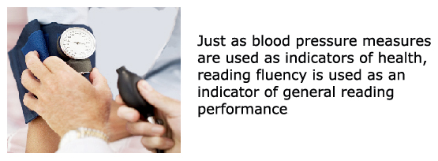

Webinar 1. Progress Monitoring
- Why monitor students' academic progress?
- How can we use progress monitoring data?
- When should we monitor students' progress?
Formal processes
Video: Susan Lane-Outlaw gives an overview of NWEA & how teachers use the data.
Standardized achievement tests
A standardized test is “a test in which the administration, scoring, and interpretation procedures are standard or set” (6). Standardized tests are designed in such a way that the questions, conditions for administering, scoring procedures, and interpretations are consistent, and are administered and scored in a predetermined, standard manner (7). An achievement test is a summative “measure of what students have been taught and learned” (8). Standardized achievement tests fall in either one of two categories – norm-referenced and criterion-referenced tests.
Norm referenced test
A norm-referenced test compares an individual’s performance to the performance of his or her peers or norm group. Norm-referenced tests are not aligned to the school’s curriculum, but rather students’ mastery of commonly taught content. Examples of norm groups are: 1) age; 2) grade; 3) disability, and 4) gender.
Examples of norm-referenced tests are Iowa Basic Skills test and the Stanford Achievement Test.
Criterion-referenced test
Criterion-referenced measures compare the student’s performance to a set benchmark or set of criteria for the skill being assessed (11).
Results of criterion-referenced measures tell us where the student is in achieving a specific skill e.g. Helen is able to identify 26 letters in the alphabet.
Diagnostic test
A diagnostic test is intended to evaluate a student’s strengths and weaknesses in a particular academic skill. Information from diagnostic tests is often used to identify areas for instructional and placement decisions. Diagnostic tests are typically used as a summative measure (8).Examples of diagnostic tests are the Test of Early Reading Ability – Deaf /Hard of Hearing (TERA-DHH), Test of Written Language (TOWL-3).
Diagnostic tests are generally not appropriate for documenting student progress; they are generally not sensitive enough to identify gains by individual students in a short period of time.
Diagnostic tests are typically individually administered and generally too lengthy to be used for efficient progress monitoring.
Video:
Kari Pofahl talks about other data that teachers find
helpful.
Screening
Screening is an approach in which measures are used to investigate the present level of student performance. The data can help teachers identify at-risk students who are not meeting benchmarks (12). Screening usually takes place three times (Fall, Winter & Spring) during the academic year. If a student falls below the expected level of performance on the screening, the teacher begins progress monitoring weekly to monitor the effectiveness of adjusted instruction and/or interventions (12 & 13).

Video: Kathy Arnoldi is talking about using PM in the program.
Curriculum-based assessments (CBA)
Curriculum-based assessments are frequently non-standardized assessments; however, some aspects of the assessment process may be standardized, e.g., EasyCBM and Accelerated Reader (14).
CBA is an “umbrella” term that is used to describe the process of assessing a student’s performance based on the local curriculum. This process involves use of materials in the classroom, such as end of chapter tests, teacher made tests, and curriculum-based reading inventories.
One type of CBA is subskill mastery monitoring (MM). MM is a process in which global curriculum outcomes are defined as a set of subskills. Each set of subskills are then ordered as short-term instructional objectives. These subskills are hierarchical and presumably add up to general integrated skill (e.g. reading and writing). Progress within each targeted subskill is identified and measured, but not across the hierarchal order of subskills, or progress over time.
A second form of CBA is General Outcome Measures (GOM). GOM is a process that focuses on broad, long-term goals and objectives. GOM reflects the retention, application and generalization of learning. MM reflects accomplishments of specific skills. GOM is performance-based on curriculum outcomes. The outcomes used may be specific to the student’s program or generalized measures. CBM is a type of GOM (14).
GOM focuses on the outcomes (Does the child read?) and GOM focuses on indicators of a combination of skills (e.g. decoding and comprehension). For example, oral reading fluency is an indicator of reading proficiency appropriate for use with children who hear and are able to produce intelligible speech with ease. Fluent readers have automaticity and can read text with speed, accuracy and proper expression.
Video: Stan Deno provides background information regarding CBA/CBM and the evolution of GOM today.
Curriculum Based Measurement (CBM) uses GOM as the basis for monitoring students’ progress in academic areas (15). CBM is the only progress monitoring approach that is standardized and has a 30-year history of data-based evidence. CBM involves standardized administration, standardized scoring, and functional/comprehensible and objective data. CBM assesses a broad range of skills using an “indicator” or “probe”.

CBM is a process we can use to monitor the progress of students (16). Characteristics of CBM are:
-
Reliable and valid (objective)
-
Easy to administer (usable)
-
Time efficient (frequently used)
-
Low cost (affordable)
-
Effective (functional information that can be used to communicate with parents and other stakeholders).